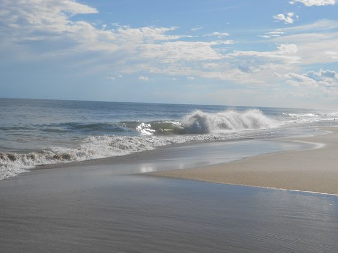
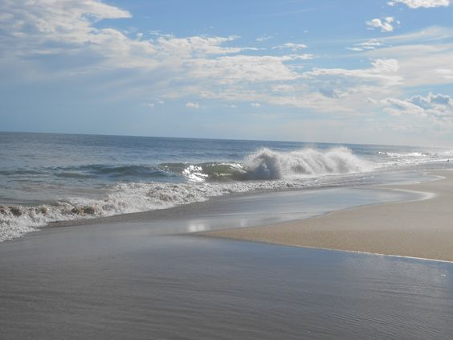

.jpg)
Le Maylis
ENJOY WITH US
- HOME
- ROOM & Price
- Table
- Activities
- CONTACT
Presentation
Welcome to Maylis! We're delighted to have you with us and look forward to providing you with a memorable and relaxing stay
Le Maylis, a 1st-category Rural Lodge, is 25 km from Tangier, nestled against Jebel Zhirou's southern slopes with scenic Rif views. Run by Therese, it offers a tranquil retreat with six double rooms for up to 12 guests on a 5000 m² property. Surrounded by prickly pear cacti and wild olive trees, the lodge's communal spaces foster camaraderie, providing guests with indoor dining, lounges, a library, and covered areas to relax while enjoying picturesque countryside views.
Rooms
Our rooms offer comfort and tranquility, the perfect retreat for a restful stay
Each room is equipped with storage space and a bathroom with a shower and toilet. They also have private outdoor areas to enjoy the garden in complete peace and quiet.

Details
Room 1 - Single
1 person
20 m²
Details
Room 2 - Double
2 people
40 m²

Details
Room 3 - Suite
4 people
100 m²
Host Table
Our Table
Enjoy nutritious Moroccan cuisine, a perfect fusion of flavors promoting a healthy lifestyle.
Maylis offers its guests a catering service. Upon request, we can prepare meals based on regional products with Moroccan or Mediterranean flavors.


 
